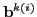
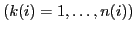

The quality of multigrid methods crucially depends on an efficient interplay between the smoothing operator and prolongation . More precisely, the range of should be sufficiently well represented in the range of . In the limit case of an optimal (but usually impractical) choice of and this means that
In this talk we present a formalism for the construction of proper prolongation operators in order to accomplish the transfer from coarse to fine grids within a multigrid algorithm. The main idea is to force relation (1) only locally (i.e. at each coarse variable ) for a certain subset of (algebraically) smooth basis vectors  . Following this idea, classical matrix-dependent prolongations or prolongation operators based on smoothed aggregation can be recovered. Moreover, this rather general framework gives rise to many other variants whose complexity and accuracy can be controlled by a careful selection of basis vectors and smoothing operators, which are applied to construct . For example, geometric or other problem-dependent information can be easily exploited to tailor the prolongation to the particular application at hand.
At the end of the talk we will present numerical results for several two- and three-dimensional diffusion problems including jumping coefficients. In particular a real-world three-dimensional image segmentation problem from a medical application is discussed.